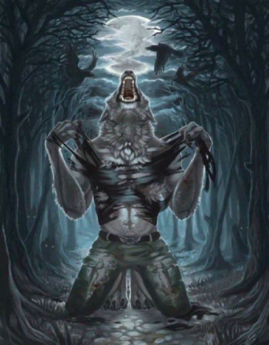
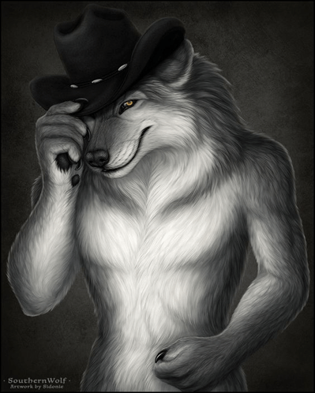

Várúlfar eru yfirnátturlegar skeppnur sem voru fyrst "uppgötvaðir" um það bil 2000 BCE. Varúlfar eru alls ekki einu "formbreytir" í sögu manna, líka eru selkies,
en varúlfurin er sá þekktasti, líklegast vegna þess að úflar eru á langflestum löndum, og úlfar líkjast mannfólki á hátt sem enginn önnur dýr geta.
Matur sem þeir éta var líkt okkar, þeir eru í fjölskyldum allt sitt líf og vinna samamn, og voru ein af þeim einu sem átu mannfólk.
Það eru þrjár tegundir af varúlfum sem er oftast talað um.
Fórnalambið
Fórnalambið eða "The victim" er tegundin þar sem saklaus manneskja er breitt í skrímsli eða skeppnu. Algengur misskilningur er að varúlfar breytist
bara þegar það er fullt tungl. Það er ekki satt. Fórnalambið var oftast maður, af því að konur voru verla talnar vera mannfólk á þessum tíma,
og maðurin var neiddur að vera skepna dag og nótt þar til að hann dó, en gat enn hugsað og gert ákvarðanir. Þessi tegund var sú fyrsta, og elsta saga um varúlfa fylgdi þessari tegund.
Það var "The epic of Gilgamesh" sam var um bónda sem var breytt í úlf af gýðju.

Sá fordæmdi.
Sá fordæmdi eða "The damned" voru illir men sem var breytt í varúlf sem refsing fyrir bæði líkama þeirra og sál. Jafnvel þó flestir haldir anars,
þá var sá fordæmdi algengsti varúlfurin þegar sögurnar býrjuðu, aðalega í Grikklandi og Rome. Ein frægasta og elsta varúlfa sagan heytir "Agriopa's olympionics"
þar sam manni er breytt í úlf í 10 ár fyrir að éta innefli af mannfólki. Flestar sögur á þessum tíma voru um mannætur sem var breytt í úlfa.
Það hefur með það að gera að úlfar eru tækifærissinni. Þeir éta langflesta hluti, langflest lík sem þeir finna, mannfólk meðaltalin ásamt öðrum úlfum.
Önnur fræg saga er um rómska guðin Júpiter og konung sem hét "King Lycaon" af Arcadia. Í sögunni heirir guðin að konungurin sé að éta mannfólk.
Hann breytir sér í manneskju og talar við konunginn. Konungurin er ósamfærður um að Júpiter sé guð í raun. Svo hann myrðir þrjár manneskjur og reyndir bera það fram fyrir guðinum.
Guðinn verður brjálaður við það að maðurin hefði reynt að plata hann. Hann eyðileggur kastala konungsins og breytir fötum hans í feld og hendur og fætur hans verða loppur.
Hann breytsit alveg í úlf fyrir utan augu hans. Gríska orðið Lykos, úlfur, og anthropos, maður, sem er þar sem orðið "Lycanthropy" kom frá.
"The warrior"
Þripja og síðasta tegundin er "The warrior", sem kom frá víkingum. Stríðsmenn sem voru kallaðir "berzerkers" voru men sem reyndu að líkja sér við dýr í baráttu.
Birnir úlfar og villtsvín voru algengustu dýrin. En þessi tegund er oft ekki talin með í þessum lista vegna þess að mennirnir töldu sig ekki breytast í raun,
þeir töldu sig breytast andlega þegar þeir voru með feld af dýrinu á sér í bardaga, en breytust ekki líkamslega. Þeir eru ekki varúlfar, og ættu í raun varla að
vera á þessum lista en þeir eru ein af þremur stóru svo ég setti þá hér.

"Honorable mentions"
Fleiri formbreytir sem eru ekki endilega varúlfar en langar að minnsat á. Selkies, sem eru verur sem geta breyt sér frá manneskju í sel,
en bara ef þau hafa sel skinnið sitt til að breytast til baka. Oft er skinninu stolið af mönnum til að neyða selkjurnar til að giftast þeim.
Kelpies eru ekki manneskjur, frekar andar sem geta breytt sér í fallega blauta hesta sem lokka fólk í vatnið til að drekkja þeim.
(Sorry hvað með þessa mynd þrisvar, hún var bara svo fyndin ég gat ekki ekki notað hana.)